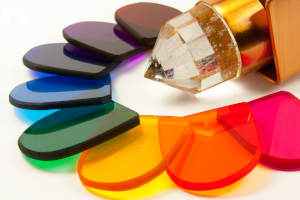
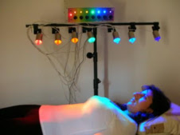

Cromoterapia
O que é Cromoterapia
A cromoterapia é um tipo de tratamento complementar que utiliza ondas energéticas emitidas pelas cores como o amarelo, vermelho, azul, verde ou laranja, atuando em células do corpo e melhorando o equilíbrio entre o corpo e a mente, sendo que cada cor apresenta uma função terapêutica diferente.
Cada cor tem sua função terapêutica específica e atua em um chakra ou um órgão do corpo humano. Sendo assim, ao serem acionadas, as cores impactam fortemente nessas áreas, restabelecendo ou energizando tudo que está bloqueado ou em desequilíbrio no corpo, como as doenças, por exemplo.
Origem da Cromoterapia
O tratamento de doenças por meio das cores vem sendo feito desde 2800 a.C, nos povos da antiguidade, como gregos, egípcios, chineses e indianos. Essas culturas utilizavam pedras preciosas e flores para curar os doentes.
Atualmente, hospitais de vários lugares do mundo já utilizam a Cromoterapia em bebês prematuros, com o uso da luz ultravioleta. Além disso, a técnica que usa as cores é reconhecida desde 1976 pela Organização Mundial de Saúde (OMS) como uma das principais terapias complementares.
Como utilizar a Cromoterapia
Devido aos seus benefícios, a cromoterapia pode ser utilizada para vários tipos de problemas de saúde como febre, insônia, diabetes, doenças psiquiátricas, hipertensão, transtorno afetivo sazonal, feridas e doenças articulares, porém deve ser usada como prática complementar, não devendo substituir o tratamento convencional indicado pelo médico.

O método é baseado nas sete cores do arco-íris, é realizada através de aparelhos que emitem luz, sendo que essa luz pode ser emitida diretamente na pele ou a pessoa pode ficar em contato com a luz dentro de uma sala fechada, podendo estar deitada ou sentada.
Cada cor possui uma vibração energética diferente e, à medida que se propagam em algum ambiente, causam efeitos curativos ou calmantes nesse espaço. Vale lembrar que não é só a visão que absorve a energia de uma cor, todo o organismo possui capacidade de perceber e receber os efeitos da Cromoterapia.